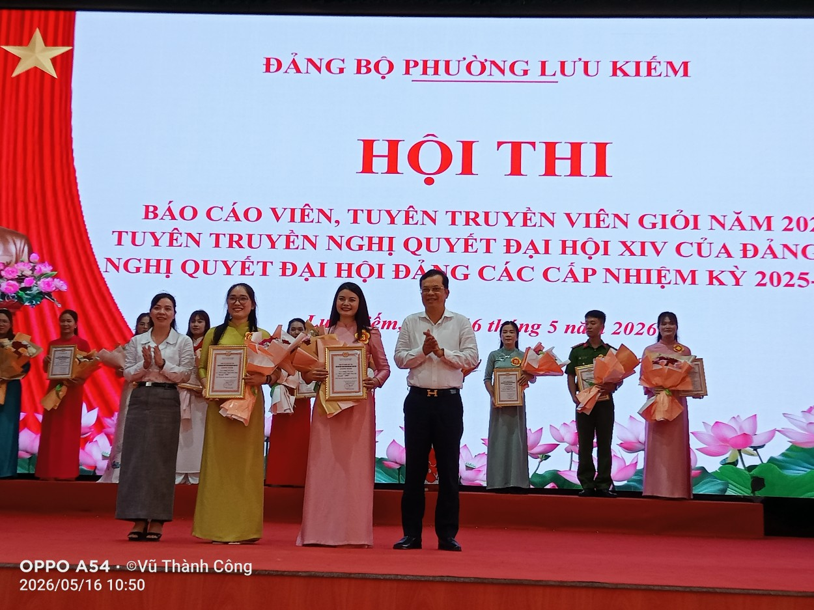
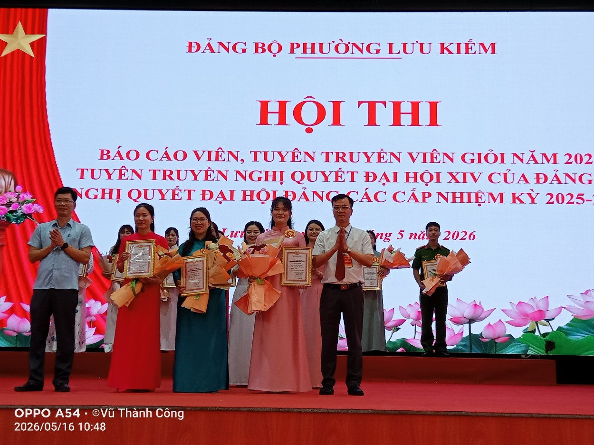
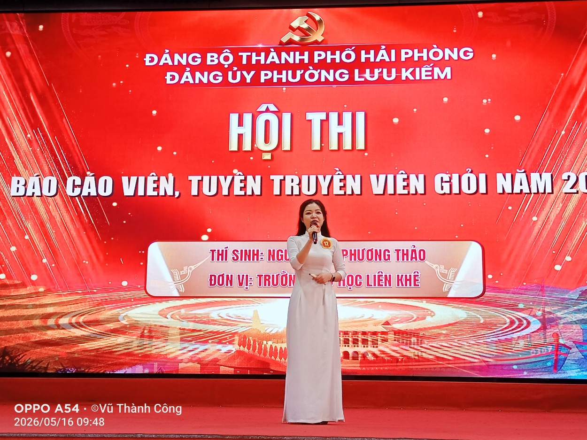
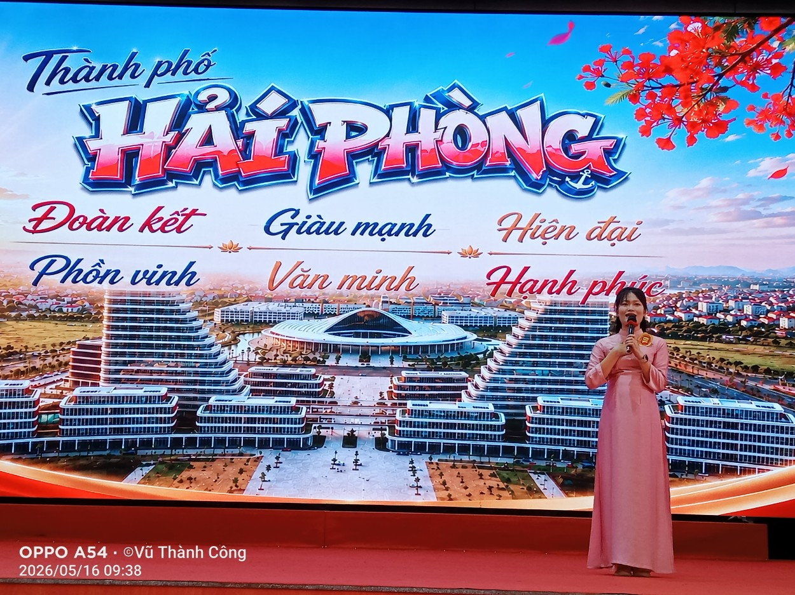
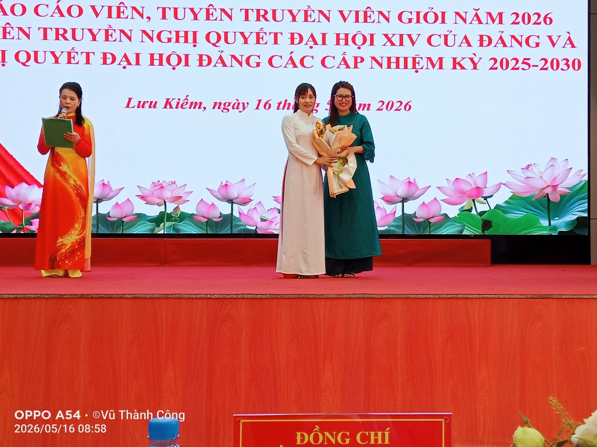
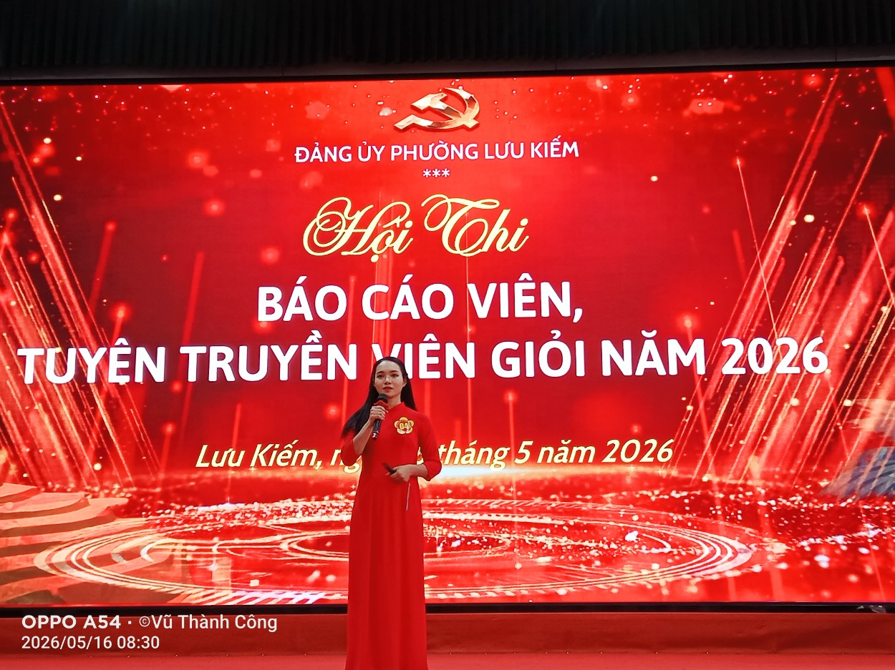
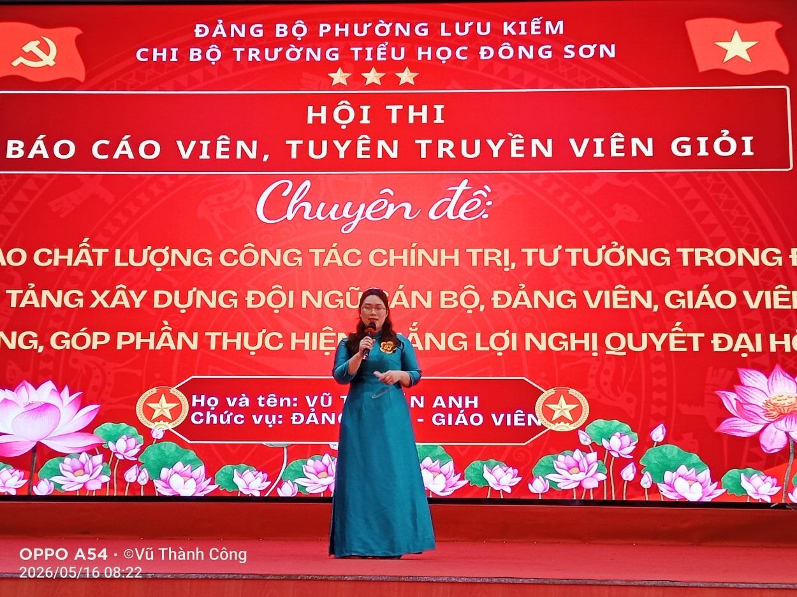

Thực hiện Kế hoạch số 45-KH/BTGDVTU, ngày 07/4/2026 của Ban Tuyên giáo và Dân vận Thành ủy. Đảng ủy phường Lưu Kiếm long trọng tổ chức Hội thi Báo cáo viên, Tuyên truyền viên giỏi năm 2026 nhằm tuyên truyền Nghị quyết Đại hội XIV của Đảng và Nghị quyết Đại hội Đảng các cấp nhiệm kỳ 2025 - 2030.
Thông qua hội thi nhằm góp phần thống nhất nhận thức, tư tưởng và hành động trong toàn Đảng bộ, tạo sự đồng thuận cao trong xã hội, thúc đẩy đưa nghị quyết nhanh chóng đi vào cuộc sống. Tạo đợt sinh hoạt chính trị sâu rộng, góp phần củng cố niềm tin, khơi dậy tinh thần trách nhiệm, ý chí tự lực, tự cường, khát vọng phát triển của cán bộ, đảng viên và Nhân dân trên địa bàn phường.
Một số hình ảnh của hội thi:






